Conclusion : une conviviale sympa, un cadre grandiose, pas de sono, je reviendrai !
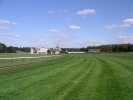
Une photo pour que vous puissiez vous imaginer à donf sur votre pur-sang avec le martèlement des sabots de la horde furieuse qui résonne dans tous vos organes et, paisible, le chateau en toile de fond.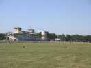
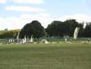
A l'arrivée, le camp est déjà en partie monté dans l'immense surface au centre de l'hippodrome...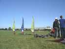
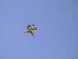
Il y a même des monofils comme cette chouette chinoise...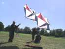
...ou ce Pellibox solide.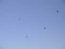
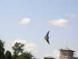
Des NorthShores viendront aussi "sonoriser" la journée. Pour un show, c'est bien. Pour le plaisir, c'est comme les tam-tams, faut aimer...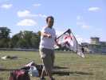
On verra aussi un cerf-volant de vitesse d'un maître chinois dont je n'ai pas retenu le nom. Il volera peu, faute d'un vent soutenu.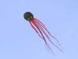
Les monofilistes sortent une pieuvrette noire et rouge, mais qui n'a pas besoin, comme celles des Grands Maîtres, de Flowform pour la tenir en l'air.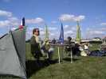
Philippe, lui, a amené du matériel, tente, drapeau français, fauteuil, table, sans oublier la bouteille de rosé et le verre, et un vrai verre en verre !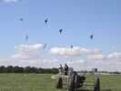
Pendant que les buggyistes se reposent faute de vent décoiffant, un petit mégateam s'improvise, et ça ne marche pas mal...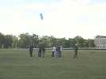
Au sol, on se passe les consignes... et GOOO !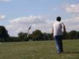
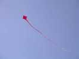
Je retrouve des vieux copains de Bagatelle, comme Wang , ou Pierre qui a toujours des cerfs-volants intéressants...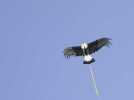
Wang se partage toujours entre le boomerang (il a créé le Boom...Wang !) et le cerf-volant. Il est venu avec sa bannière indienne et son aigle...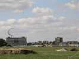
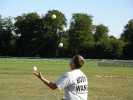
Il y a même un jongleur, lui, il sait jongler avec 6 balles, sauf quand il en perd...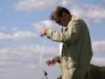